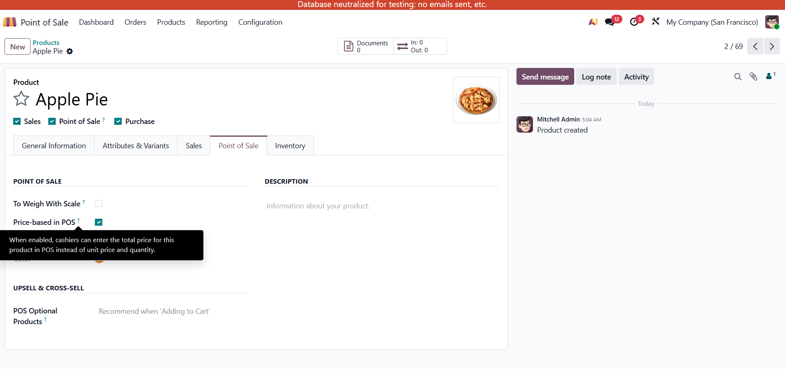
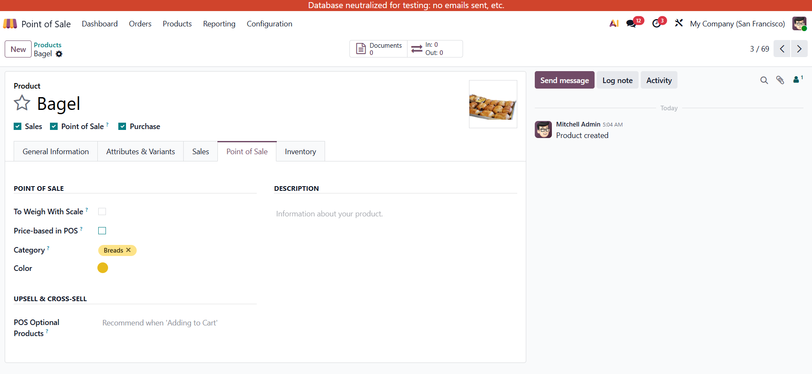
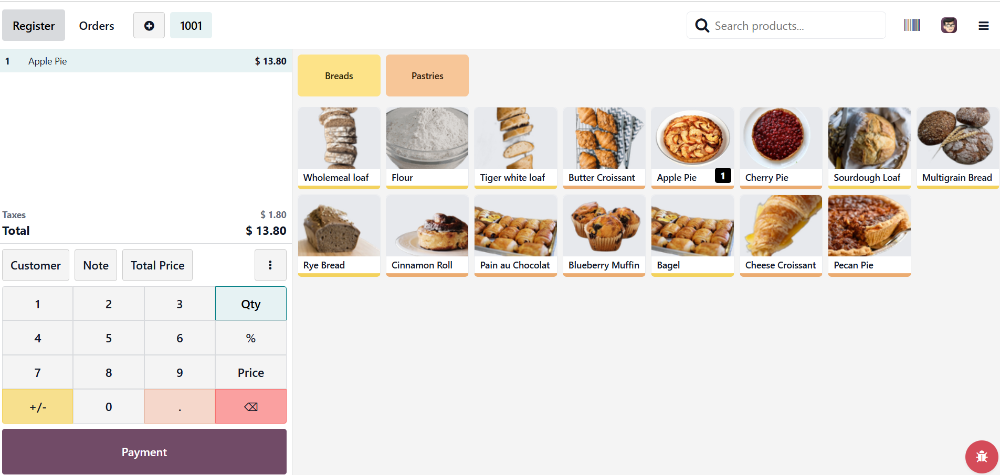
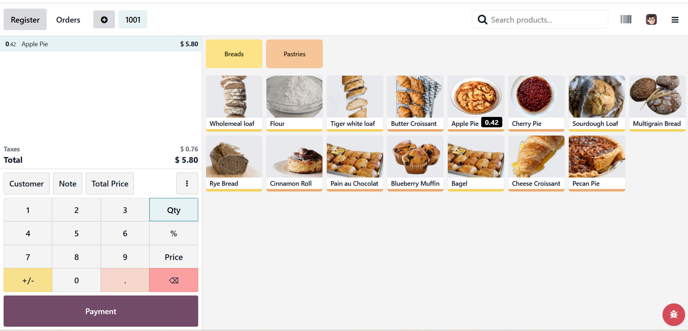
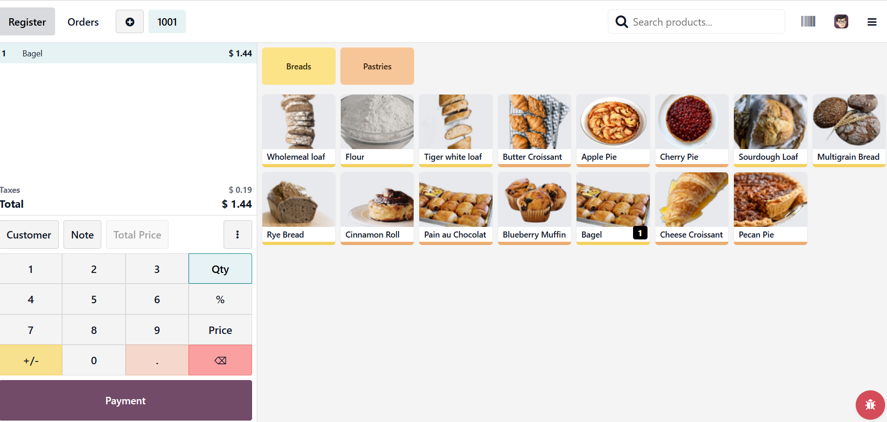
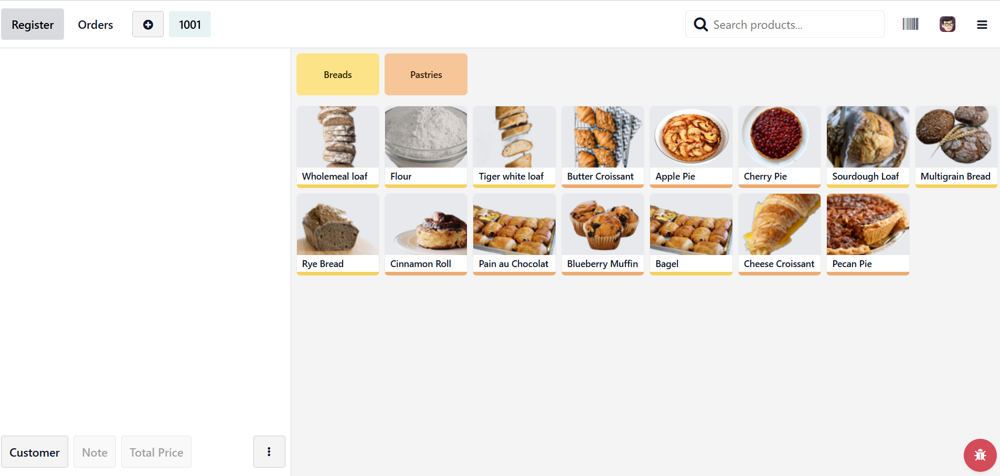

Why this module? When customers ask for an amount in money (e.g. "I want 5 JOD of grapes") instead of a quantity, the cashier can enter the total price directly. The system calculates the quantity automatically — no mental math, correct inventory and invoicing.
Key benefits:
Adds a Total Price button to the Point of Sale control buttons. When the selected order line is for a price-based product, the cashier can click Total Price to activate total-price numpad mode. The cashier then types the desired total using the numpad; the system computes and updates the quantity in real time (Qty = Total ÷ Unit Price). Unit price is never changed.
A boolean field Price-based in POS is added to the product form (Point of Sale tab). The Total Price button is only enabled when the selected line belongs to a product with this flag enabled. Zero unit price and missing selection are handled gracefully; the button is disabled when not applicable.

Product form — Point of Sale tab: enable "Price-based in POS" for the product. The Total Price button in POS is then available for this product.

Product with "Price-based in POS" disabled: in POS the Total Price button stays disabled for this product; only products with the field enabled can use it.
2). The system computes: Qty = EnteredTotal ÷ UnitPrice and updates the order line quantity in real time.

Step 1: Select the product (with the field enabled). Step 2: Click Total Price — the button becomes active. Step 3: Type the total amount on the numpad. The order line quantity is updated automatically.

Final result: The order shows the calculated quantity (e.g. 0.25 kg) with the total matching the entered amount. The line is ready for payment.

For a product that does not have "Price-based in POS" enabled (e.g. Bagel), the Total Price button stays disabled. You cannot sell it by the customer's requested total price — only by quantity and unit price.
No order line selected, product without the flag, or zero unit price — the button is disabled when not applicable and invalid numpad input is ignored.

POS with no products in the order: the Total Price button is visible but disabled (cannot be clicked) until a price-based product line is selected.